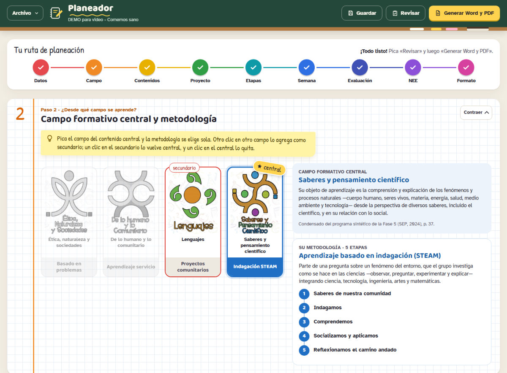
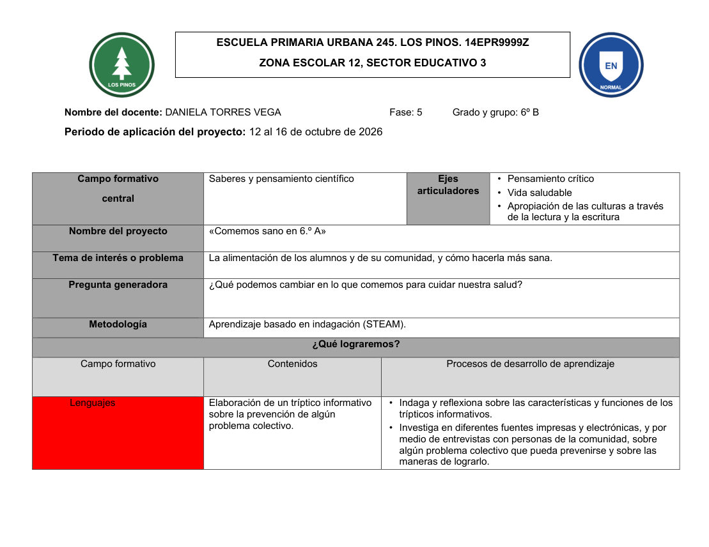

9
pasos guiados
Datos de la escuela, campo formativo, contenidos y PDA, proyecto, etapas de la metodología, la semana, evaluación, ajustes NEE y formato.
Un panel para armar planeaciones de primaria paso a paso, con los contenidos y PDA del programa sintético 2024 de la NEM. Revisa que no falte nada y te entrega el Word y el PDF listos para entregar.

Así se ve: una ruta de 9 pasos que se va palomeando.
Tú escribes tus actividades; el Planeador acomoda todo lo demás y lo revisa.
Datos de la escuela, campo formativo, contenidos y PDA, proyecto, etapas de la metodología, la semana, evaluación, ajustes NEE y formato.
Contenidos y PDA textuales de los programas sintéticos 2024 de la SEP. Eliges el campo y la metodología se elige sola.
Busca PDA que no son textuales, etapas fuera de orden, sesiones sin consignas o firmas que faltan.
La Planeación Cedros o el formato de tu metodología: ABPC, STEAM, ABP o Aprendizaje Servicio.

Con tus logos, tus datos y la hoja de firmas en orden de jerarquía. Trae una planeación de ejemplo, con datos ficticios, para que veas cómo queda antes de hacer la tuya.
Tres pasos, una sola vez. No hay que instalar nada más: ya trae todo lo que necesita.
Con el botón de arriba se baja Planeador.zip a tu carpeta Descargas.
Clic derecho en Planeador.zip → Extraer todo… → Extraer.
En la carpeta que sale, doble clic en Instalar. Queda el ícono Planeador en tu escritorio y en el menú Inicio, y ya puedes borrar el .zip.
Necesitas: Windows 10 u 11 y Microsoft Word para el PDF (sin Word, te deja el .docx). Tus planeaciones quedan en Documentos › Planeador › planeaciones.
Con el botón de arriba se baja Planeador-Mac.zip. Safari lo descomprime solo y deja la carpeta Planeador en Descargas (si no, doble clic en el .zip).
En esa carpeta, doble clic en Instalar.command. Si Terminal pide permiso para la carpeta Descargas, pica Permitir.
Se abre una ventana con la app Planeador: arrástrala al Dock. También la encuentras con Spotlight (⌘ + Espacio).
Necesitas: macOS 11 o más nuevo (chip Apple o Intel) y Microsoft Word para el PDF (también sirve LibreOffice; sin ninguno, te deja el .docx). La primera vez que generes, macOS pregunta si el Planeador puede usar Word: pica Aceptar. Tus planeaciones quedan en Planeador › planeaciones, en tu carpeta de inicio.
No. Es gratis, sin anuncios y sin cuentas.
Solo para descargarlo. Después funciona sin internet: todo se queda en tu computadora.
No. Es para computadora con Windows o con Mac. Si abriste esta página en el celular, mándate el enlace y descárgalo en tu computadora.
Porque el Planeador no está firmado por una empresa (eso cuesta) ni viene de una tienda de aplicaciones. El código está abierto en GitHub, y la versión para Mac se instala y se prueba sola en Macs con chip Apple y con Intel antes de publicarse.
El Planeador arma tu planeación en Word (.docx) de todos modos; lo que no puede es pasarla a PDF. En Mac también sirve LibreOffice.
Descárgalo otra vez de esta página y vuelve a abrir Instalar. Tus planeaciones y tus datos de la escuela se quedan.
En Windows, en Documentos › Planeador › planeaciones. En Mac, en la carpeta Planeador de tu carpeta de inicio. También las abres desde el menú Archivo del Planeador.